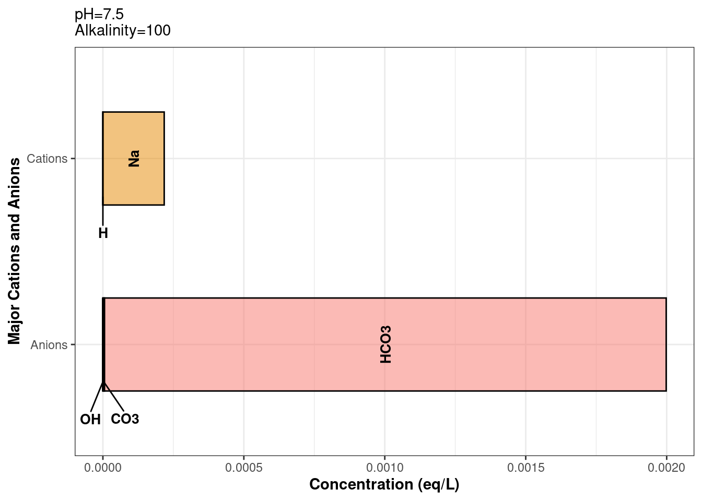

library(tidywater)
vignette("intro", package = "tidywater")starting httpd help server ... doneHow to implement package models in your analysis.
Libby McKenna
August 25, 2024
This vignette can also be accessed in RStudio by running the following
The first step for any modelling project using tidywater is to define your starting water quality. This can be done using the define_water function. This function allows you to input everything you know about your water (pH, alkalinity, temperature, etc.). It also standardizes units for subsequent modelling steps, calculates the carbonate balance from the alkalinity and pH (if provided), and estimates the ionic strength of the water from your inputs. The function then takes all this information and creates a unique object of class “water” (for more details, see R’s S4 class).
The “water” class is the building block of tidywater and allows you to keep track of all the changes in your water through various water treatment processes in a tidy way. Think of the “water” class as a snapshot of everything that is known about a water at each step in a modelling process.
Why does tidywater depend on this special class instead of just using a data frame? The water class is a good way to standardize inputs and set up a data structure that would reduce user error. Funneling users through define_water reduces naming errors in downstream functions. It also ensures that all slots have the proper data class. For example, ph must always be a number, and treatment is always a character.
To start, let’s create a blank water class and call it empty_water.
Warning in define_water(): Missing value for pH. Carbonate balance will not be
calculated.Warning in define_water(): Missing value for alkalinity. Carbonate balance will
not be calculated.Warning in define_water(): Major ions missing and neither TDS or conductivity
entered. Ideal conditions will be assumed. Ionic strength will be set to NA and
activity coefficients in future calculations will be set to 1.Notice that several warnings are generated about the water class. define_water will return warnings noting the assumptions and limitations of the water class depending on how much information you provided. For example, since we did not provide any information about the water’s pH or alkalinity, the carbonate balance cannot be calculated. Similarly, since we did not provide any information about major ions in the water, information about the water’s hardness and ionic strength are missing.
Even so, we successfully created our first water class! You can view the first few slots that a water class can contain by printing empty_water. But there are slots for general parameters, carbon content, corrosivity indicators, major cations and anions, and disinfection byproducts (DBPs). Different functions within tidywater will allow you to model all these parameters and more.
pH (unitless): NA
Temperature (deg C): 25
Alkalinity (mg/L CaCO3): NA
Use summary functions or slot names to view other parameters.So let’s add some things to this water that we already know. Let’s say we know pH, alkalinity, temperature, and the sodium concentration. We can define each of these parameters as arguments in define_water, which accepts pH (unitless), alkalinity in units of mg/L CaCO3, temperature in degrees C, and ions in mg/L (with the exception of bromide and manganese, reported as ug/L). The function also refers to all chemical compounds by their chemical symbol or formula. Let’s call the new water class my_water.
Notice that the slots for ph, alk, temp,and na are now populated when we print out the resulting water. The sodium slot (na) is output in units of mol/L (M). We can also see that define_water automatically calculated the amount of carbonate (co3) and bicarbonate (hco3) in the water based on the alkalinity and pH.
pH (unitless): 7.5
Temperature (deg C): 20
Alkalinity (mg/L CaCO3): 100
Use summary functions or slot names to view other parameters.You can easily summarize your water quality using the summarize_wq function, which takes a water class object and exports an easy-to-read table of the water quality into the console.
|
This is a great way to get started with tidywater for users who only need to model a single water quality. If you have a large data set with multiple water qualities that you want to model, though, this might sound tedious. It wouldn’t be possible to manually enter your pH, alkalinity, temperature, etc. for, let’s say, 5,000 rows. Instead, tidywater has helper functions to generate many water classes simultaneously from an imported data set. See the help_functions_blend vignette for large data processing (paste this in the console: vignette("help_functions_blend", package = "tidywater")).
Back to our single use case, you’ll notice one of the warnings alerts the user to missing cations and/or anions, and that you should use balance_ions to correct this. This is based on the electroneutrality principle which states that the charges of all the cations and anions in a water should add up to 0. If your water is missing any ions, it is likely that it isn’t balanced. This could cause the results of your model to be off.
To check, you can use the plot_ions function on our water object to see what the current ion balance looks like. You can see that cation and anion bars are not equal, so this is not very realistic.
Warning: Removed 5 rows containing missing values or values outside the scale range
(`geom_bar()`).Warning: Removed 5 rows containing missing values or values outside the scale range
(`geom_text()`).Warning: Removed 5 rows containing missing values or values outside the scale range
(`geom_text_repel()`).
To correct this, the balance_ions function automatically adds in sodium, potassium, chloride, or sulfate until anions + cations = 0. Let’s see what happens to the ion plot when we use balance_ions to estimate the missing ion concentrations.
Great! balance_ions added potassium to my_water so it is now electrically neutral. To see how much potassium was added, you can use the “@” symbol with a water class object to access the slot you want, in this case, potassium.
The potassium units are in M. What if you want to know what that is in mg/L? There are two ways to do this in tidywater. The easiest way is to use the summarize_wq function shown above, which converts the ion concentrations back to mg/L.
Another option is to use the convert_units function, which allows you to specify the chemical and the starting and ending units. In this case, we want to convert the potassium concentration in balanced_water from M to mg/L.
Obviously, “adding” 69.6 mg/L of potassium to my_water is an assumption. There could be other cations in the water besides potassium that we don’t know about. But having a balanced water is important because it affects the ionic strength, which in turn affects how different species interact when we dose chemicals into the water. You can see more detail on ionic strength and chemical dosing in the chemdose_ph vignette, but for now let’s take a look at the ionic strength of my_water before and after balancing the ions.
# The ionic strength slot was NA in the original water because we did not
# provide enough information to calculate it
my_water@is[1] NA[1] NAThere are a couple of other assumptions that define_water makes to be able to set up the data for downstream tidywater functions. These include standard ratios for hardness and DOC.
First, when only you only know the total hardness of the water (tot_hard), calcium hardness (ca_hard) is assumed to be 65% of the total, which is about average for U.S. drinking water. When only ca_hard is provided, tot_hard is assumed to be equal to calcium hardness/0.65. Magnesium hardness (mg_hard) is then calculated as total hardness - calcium hardness.
Let’s look at this using define_water. We can use convert_units to get the output in standard units of hardness. By defining only the total hardness, we see that the water vector also contains estimates for calcium and magnesium.
# Calculate hardness or calcium hardness
hard_water <- define_water(8, 20, 100, tot_hard = 150)
# total hardness in mg/L CaCO3
hard_water@tot_hard[1] 150# calcium hardness
convert_units(value = hard_water@ca, formula = "ca", startunit = "M", endunit = "mg/L CaCO3")[1] 97.5# magnesium hardness
convert_units(value = hard_water@mg, formula = "mg", startunit = "M", endunit = "mg/L CaCO3")[1] 52.5TOC and DOC inputs operate similarly to hardness. TOC and DOC are important to know for modelling and predicting various water treatment processes. If you only know TOC, define_water applies a standard conversion to estimate DOC, and vice versa. If only toc is provided, doc is assumed to be 95% of the TOC. If only doc is provided, toc is assumed to be DOC/0.95. This ratio would generally be an acceptable estimate for most drinking water scenarios, but the amount of TOC that is dissolved in raw waters could vary widely. Westerhoff and Anning, 2000 reported a range of 10-100% dissolved TOC in 25 surface waters, so keep in mind that the standard conversion may not be right for your context.
[1] 3[1] 2.85[1] 1.368421[1] 1.3Overall, tidywater helps you model scenarios with as little information as possible because we often don’t have all the data we would like, but the less you have to assume about your water, the better. It’s important to understand and list the assumptions you are making during any modelling effort.
Check out our other vignettes to learn more about tidywater’s functions for modelling softening, coagulation, DBP formation…. here ____.